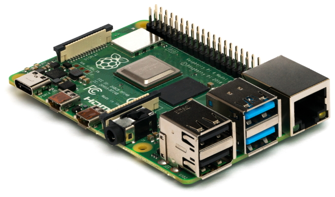

Required Class Materials¶

In this course, you will need to purchase a Raspberry Pi 4 B.
Many of the labs and exercises in this course are built around the Raspberry Pi's hardware. The Pi is a compact, single-board computer that can be used to create a Linux-based router and other common network components.
Warning
Please let us know ASAP if a lockdown is preventing packages or if sellers are indicating major delays.
Also please keep a close eye on fulfillment times. All of the links provided here have reasonable times when we looked at them, but things can change quickly. Feel free to email with any questions.
Please pay close attention to delivery time frames when ordering.
TL;DR¶
Within the US:
- Order the Raspberry Pi hardware. At minimum, you will need:
-
Board: Raspberry Pi 4 Model B (2GB version, Board Only, for $35 USD) Recommended US Seller: Canakit
Please keep the cardboard box the Pi came in as a safe place to store it when not in use. -
Power: Raspberry Pi 4 Power Supply (USB-C) Recommended US Seller: Canakit
-
Storage: A fast, microSD card, 16 GB or 32 GB will both satisfy your needs, but they cost about the same these days, so bigger is better. Recommended US Seller
-
Ethernet Adapter: If your computer does not have an ethernet port, then you need a USB based Ethernet adapter.
- If your computer only has USB-A ports, you need a USB-A to Ethernet adapter Recommended US Seller
- If your computer only has USB-C ports, then you need a USB-C to Ethernet adapter Recommended US Seller
- Ethernet Cable: An ethernet cable long enough to connect your computer's ethernet port to your Raspberry Pi (only a few inches necessary). Many people can find one of these at home, but you may need to purchase if you don't have one available Recommended US Seller
- A way to write to a microSD card. If you don't have access to a computer with a built-in SD reader/writer, a USB microSD card reader/writer will be essential.
- If your computer only has USB-A ports, you need a USB-A microSD card reader/writer Recommended US Seller
- If your computer only has USB-C ports, then you need a USB-CmicroSD card reader/writer Recommended US Seller
{kind=link}
{kind=link}
{kind=link}
{kind=link}
{kind=link}
- In addition, we recommend getting these optional supplies.
- An inexpensive case for your Pi, though it should be pretty safe while using at home without a case. Recommended US Seller
- We typically recommend a USB-C battery pack rather than relying on AC (wall outlet) power, but this won't be a major issue with us meeting remotely. Again, you don't need this, it's mainly for convenience. The battery bank must have 5 volt output at 3 amps, no less. Recommended US Seller
Outside the US:
- Order the Raspberry Pi hardware. To do this:
- Please research your purchasing options and order right away if possible.
-
To research, we recommend starting here: https://www.raspberrypi.org/products/raspberry-pi-4-model-b/. Select 'Buy Now', then select '2GB RAM' and your country. Then select one of the options on the right.
-
After doing some research, refer to the US guide above. You need to order the same 6 minimum parts as in the US guide above, and the optional ones are recommended too. You likely will need to use other websites for ordering parts 3 through 6. If you need help finding parts on the US list, please reach out to us.
Materials: A Closer Look¶
Compute¶
The main hardware you need for this course is a Raspberry Pi 4 Model B. The Pi is a compact, single-board computer that can be used to create a Linux-based router and other common network components.
We recommend the 2GB version of the Raspberry Pi 4 Model B, but if you ever plan to do other projects with the device after this course, feel free to upgrade to the 4GB model.
We don't recommend the kits because they don't align well with our needs, and you can often save a lot of money by only buying the parts you need. That being said, feel free to buy a kit if you want it for the convenience. Make sure that you get all of the 6 required minimal parts in the list above, though.
To find a seller, we reccommend Canakit, or the "Buy Raspberry Pi 4 Model B" section found here
Power¶
You will need something to power the Raspberry Pi. Typically in this course, we use external USB battery banks, but since this course is now remote, you can rely on AC (wall outlet) power instead.
If going the AC power route, you need a USB-C power supply. We recommend the official power supply found here, but it may be easier to order it with your Pi as an add-on item. You can use another power supply if you have one, provided it meets the required specifications. The power supply needs to provide 3 amps of current at 5 volts, and needs to have a USB-C at the charging end. You can see if your power supply provides 3 amps of current by looking on the back of the power supply, where it will say something like 5V3A; 5V, 3A; 3A; or 3000mA. Note: we are talking about amps (A) and milliamps (mA), NOT milliamp-hours (mAh). If it says something smaller, like 2.4A or 1A, that won't cut it, and you need something else, like the recommended model. Also, you will need to power your Pi while your computer is on, so please don't assume you can use your only laptop charger to power your Pi!
If going the battery bank power route, you will need a strong USB battery bank. We recommended this power bank that we have tested to work great with the Pi. If you want to use your own, the battery bank must have 5 volt output at 3 amps, no less, and needs to have a USB-C at the charging end. You can check if your battery bank provides 3 amps of current by looking on the back of the battery bank, where it will say something like 5V3A; 5V, 3A; 3A; or 3000mA. Note: we are talking about amps (A) and milliamps (mA), NOT milliamp-hours (mAh). If it says something smaller, like 2.4A or 1A, that won't cut it, and you need something else, like the recommended model.
Storage¶
In addition to the Raspberry Pi (and power), you will need a fast microSD card (> 8GB) on which to install the Linux operating system. I typically order these from Amazon to save money, but it may be easier to order with your Pi as an add-on item.
Ethernet Adapter¶
In addition to the Pi, please check on whether your computer has a built-in ethernet port available (most modern laptops do not). Since you will need to connect to ethernet in order to manage your Pi, you may need to purchase a USB-based Ethernet adapter. Determine whether your computer is USB-A or USB-C and then pick accordingly.
- If your computer only has USB-A ports, you need a USB-A to Ethernet adapter Recommended US Seller
- If your computer only has USB-C ports, then you need a USB-C to Ethernet adapter Recommended US Seller
Ethernet Cable¶
You will need an ethernet cable long enough to connect your computer's ethernet port to your Raspberry Pi. Many people can find one of these at home, but you may need to purchase if you don't have one available Recommended US Seller
MicroSD Card Reader¶
Finally, you will need a way to write to a microSD card. This is essential for setting up your Pi, but you shouldn't need it after the initial set-up. If you don't have access to a computer with a built-in SD reader/writer, a USB microSD card reader/writer will be essential.
- If your computer only has USB-A ports, you need a USB-A microSD card reader/writer Recommended US Seller
- If your computer only has USB-C ports, then you need a USB-CmicroSD card reader/writer Recommended US Seller
Case¶
An inexpensive case for your Pi is very nice to have, but is optional. The Pi by itself is a bare PCB, like a motherboard, so it is prone to damage if mishandled or placed in a bag without any other protection.
Because we are remote, the Pi should be safe without a case at your house, but please keep the cardboard box the Pi came in as a safe place to store it when not in use.
Most cases protect the Pi within a plastic shell. Some cases come with extra supplies, like heatsinks (metal fins that stick on the chips on the Pi to provide passive cooling), or even fans to cool the Pi. These aren't necessary for this class, but do help your Pi push itself to its limits in terms of CPU power, so they are nice especially if you are planning to use your Pi for other projects after this course.
The official case is located at Amazon but we reccommend the case found at this Amazon listing as it has heatsinks and a fan that will aid in increasing your pi's lifetime.